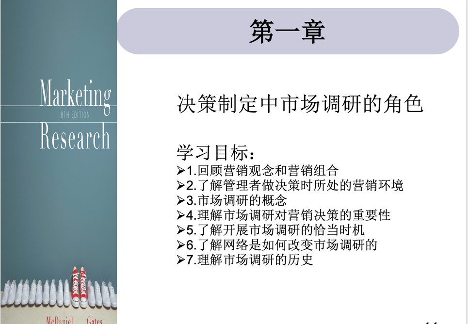
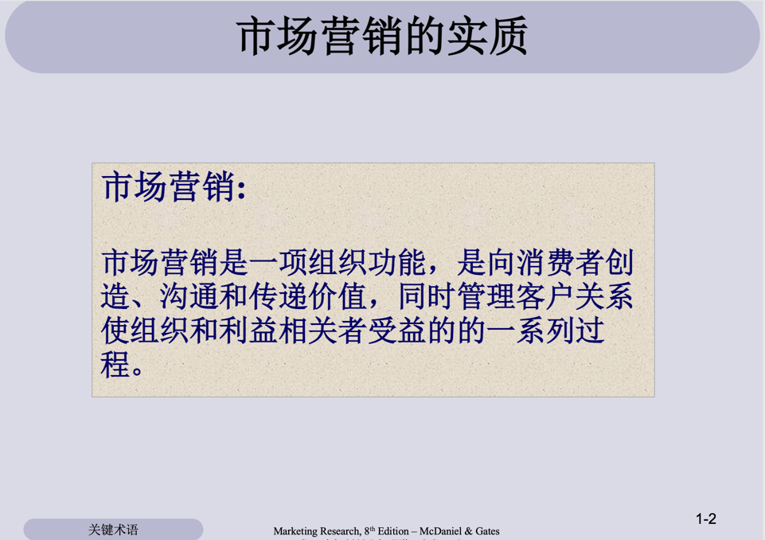
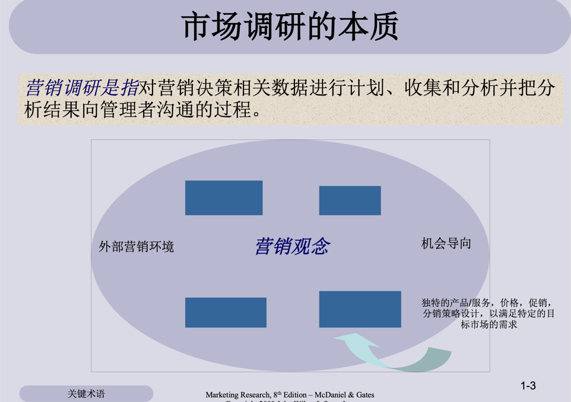
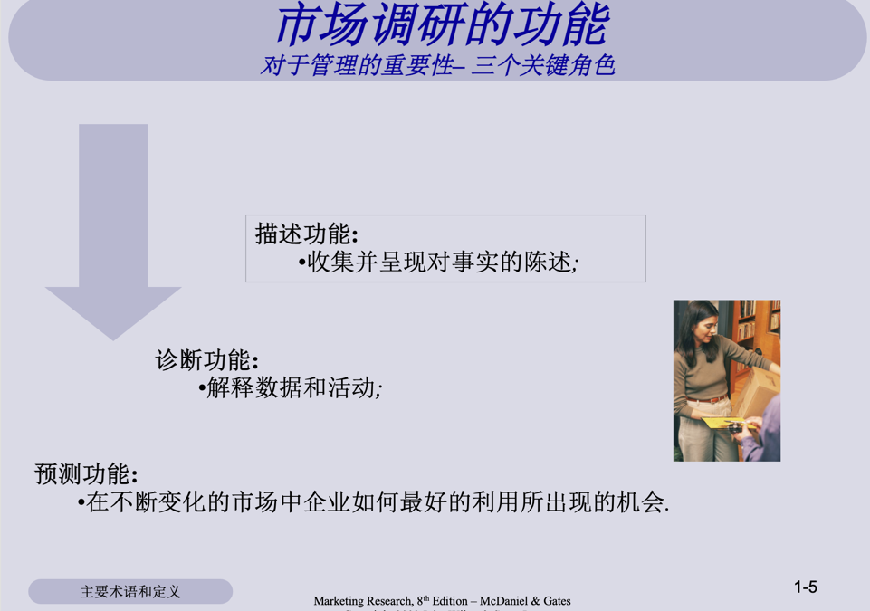

第 1 章 市场调研在管理决策中的作用





 )
)
第 2 章 市场调研行业的道德抉择
第 3 章 定义问题、探索性调研以及市场调研过程
第 4 章 二手 资料和大数据
第 5 章 定性调研
第 6 章 传统的询问调研法
第 7 章 互联网的应用 ： 移动端
第 8 章原始资料收集：和市场测试
第 9 章原始数据收集：实验法
第 10 章测痲的概念
第 11 章态度测蜇
第 12 章问卷设计
第 13 章基本抽样问题
第 14 章样本容量的确定
第 15 章数据处理与数据
第 16 章差分统计检验
第 17 章 二元变量相关和回归
第 18 章多变量数据分析
第 19 章 沟通调研成果
第 20 章 市场调研管理